本件も、槌より柄の方が重たくなったような取り組みです
ＤＥＬＩＣＡプラグ・イン・コンバータなど結果的に集めてしまい、そうなると親受信機が欲しいよね、ということから始まったお話です
当初は、ＩＦが１６５０ＫＨｚのハリクラ ＳＸ－１４０を使おうかと思っていたのですが、ここはやはり国産品でなどと考え直したもので、結果的にこの９Ｒ-５９を選択してしまったというのが実情です
デザイン・時代的には、海外に展開したＵＳ軍関係者（家族など軍属も）が、ＵＳの放送を聞くために用意されたようなロングラン・ヒット商品であるハリクラ Ｓ-３８シリーズも良いかなと一度は思ったのですが、少なくともＳＳＢ受信の意識はなく、ＣＷ受信用のＢＦＯ内臓レベルです
ここはオリジナル性を優先して、この選択になりました
余談ながら、私の使用した最初のメーカー製受信機は、９Ｒ-５９Ｄでした |
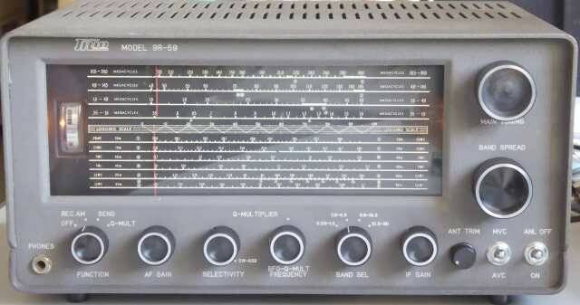 |
| 一時は世間を席巻したと思われる通信型受信機です |
ＴＲＩＯ（現ＪＶＣケンウッド）より発売された、かの高名な？９Ｒ-５９の登場は１９６０年、この時代のこのクラスの受信機に於いては、まだプロダクト検波は採用されておりません
６０年代前半は、まだまだＳＳＢは特殊というか、ほとんどのハムは手にすることの無かった電波形式でした（私の体験では、本格的なＳＳＢの普及は１６６８年くらいから）
さて本機ですが、高一中二のシングルスーパー方式を採用した当時としては言わば標準的な通信型受信機です
ＩＦは４５５ＫＨｚ、IF帯域巾を狭帯域化するためにＱマルチという回路が採用され、ＳＳＢ／ＣＷ時には、このものをＢＦＯとして発振させ、ビートをかけて聞くというものです
折角の狭帯域化を図るＱマルチなのですが、ＳＳＢ／ＣＷ時には、別の働き（ＢＦＯ）をさせますので、帯域巾は狭く出来ません
ＳＳＢ／ＣＷはおまけの旧二級／電話級向けの受信機と言うことになるのでしょう
それでも本格的な通信型受信機と言うことで、キットと完成品と両方の形で発売されたのですが、当時としては大ヒット商品となりました
その後、上位機種にＪＲ-６０（プロダクト検波採用／Qマルチと独立したＢＦＯ／５０ＭＨｚコンバータ内蔵）、そして後継機として９Ｒ-５９Ｄ（その後、９Ｒ-５９ＤＳ）が発売になりました
９Ｒ-５９Ｄ（Ｓ）では、メカニカル・フィルタ（安価なタイプ！）とプロダクト検波の採用と、ちょっと新しい時代を感じる設計となりました |
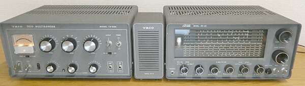 |
| 相方のTX-８８Aと一緒に |
余談のコーナー
９Ｒ-５９の先代は、９Ｒ-４ ９Ｒ-４Ｊであろうと思われます
漁船への搭載など、耐震という観点からＧＴ管を使用することも想定してあったようです
当時の回路図を見ると太字でＧＴ管、細字でＭＴ管の名称が記してありますし、シャーシにも大きなφ３０のソケット穴が用意されています
Ｑマルチの搭載はなく、ＢＦＯが搭載されています
シャーシ・レイアウトは、９Ｒ-５９とほぼ同一・・・９Ｒ-５９が、９Ｒ-４ ９Ｒ-４Ｊをそのまま踏襲したものと思われます（９Ｒ-４ ９Ｒ-４Ｊのシャーシに、Ｑマルチのサブシャーシが追加されただけのイメージ）
現に、９Ｒ-５９に搭載の電源トランスには、 ＭＯＤＥＬ ９Ｒ-４Ｊ の表示があります
９Ｒ-４２（Ｊ）は、５５０ＫＨｚから３０ＭＨｚを４バンドで連続カバーする９Ｒ-４ ９Ｒ-４Ｊとは異なり、アマチュアバンド専用に設計されたと言うことで、１．６～３．５ＭＨｚが抜けています（ＶＣの使い方が異なる）
９Ｒ-４ 完成品、￥３３，６００（送料共） 球無しキット ￥１６，２００（送料共）と、手元の資料にはスタンプが押してあります（時期によって、価格が異なるのかもしれませんし、販売業者の押したスタンプかも知れません）
ブランドは、ＴＲＩＯが採用されていますが、会社名は春日無線工業となっています
９Ｒ-５９は、完成品￥３３，０００ 球無しオールキット￥１８，５００と、パンフレットに記載があります
短期間だったと思いますが、９Ｒ-５９の弟分として、高一中一の構成で、Ｑマルチ／ダイヤル・フライホイール無しの、ＪＲ-２００と言う製品が発売され、球無しのオールキットが ￥１４，５００だったと思います
９Ｒ-４２と９Ｒ－５９の違い・・・電気的には混信対策にＱマルチの採用、そして横行きダイヤルの採用
少なくともダイヤル・デザインについては、ハリクラ Ｓ３８シリーズの変遷と似てます（真似たと言う点があるのでしょう）
その後、９Ｒ５９Ｄの登場で見た目のイメージは全く変わってしまいました
プリント基板の採用という、製作上の変更も大きいものでした |
|
さて、２台を入手していいとこ取りとしました
片方は、ほとんど無改造、片方は色々と手が加えられていました
外観ひとつとっても、ツマミが純正ではないとか、足がないとか、それぞれです
この時代のことですから、色々と改造というか、いろんな情報を集めては、少しでも良い結果が得られるように自分でやってみるということは、当然のことです
給料（初任給）の数ヶ月分をはたいて買ったメーカー製受信機ですから、出来ることがあれば、少しでも良くしたいという希望は、全員にあったと思います（そうそう新しいギアが買えるような状況にはない！）
当時のＣＱ誌は、自作で挑戦した方の記事や改造記事が一杯ありました
やる気をそそられる記事が、毎月の楽しみでした
ＳＳＢの普及と言うことで新しい技術がどんどん紹介された時代でもありました |
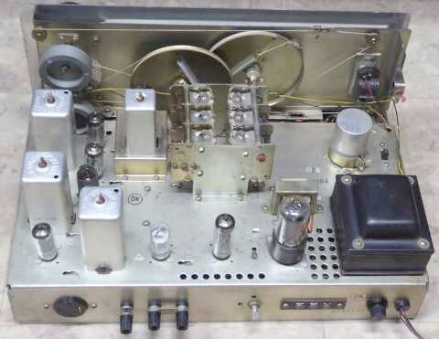 |
ダイヤル・スケール表示
裏側にプリントしてあるスケール
いとも簡単に消えます
うかつにこのガラス裏面を触らないことをオススメします
ホコリをしっかり被っていましたが、ホコリを払うと、シャーシは、まずまず綺麗な部類だと思います（鉄シャーシですから）
|
シャーシ上部
アンテナからＲＦアンプ、ミキサー オシレータと来て、Ｕターン ＩＦアンプが、ＲＦアンプの傍を通って、検波 ＡＦアンプという流れです
ＡＦ出力管と、電源トランスとの間に、整流管が配置されています
その奥に見えるのは、ＡＦ出力トランスです
８Ωルートには、ヘッドホン端子が入りますが、４Ωルートはそのまま出力されています
４Ωスピーカーとヘッドホンは同時稼働可、ということになります
Ｑマルチは、ミキサー管とＶＣの間、狭いところに別シャーシとして用意、メイン・シャーシに取り付けられています
リアパネル左端
ＵＹソケットが取り付いています
ここに接続して使うオプション プリ・セレクタ ＳＭ-１ の用意がありました |
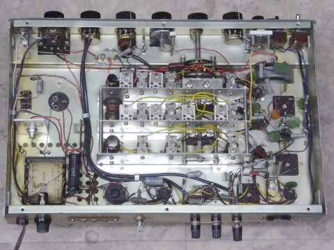 |
シャーシ内部
きっとこのものは完成品として販売されたものでしょう
Ｌ型抵抗と、チューブラ・コンデンサには時代を感じます
Ｑマルチの電源供給部分だけがなぜか変更されていました |
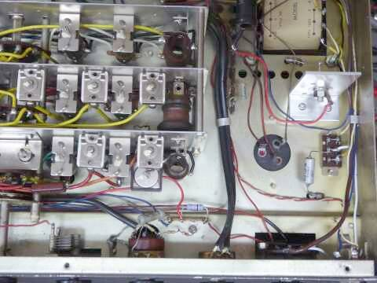
電源トランスの下に、新たにアルミ製Ｌ型のステーを用意
ここに１００Ｖ１０Ｗのツェナー・ダイオードを取り付けました
今回は横着をして、１１５Ｖラインで１００Ｖに安定化という策としました（多少、全体の利得が下がることになるかも知れませんが、真空管はきっと長持ち！？）
その電源トランスですが、 ＭＯＤＥＬ ９Ｒ-４Ｊ と記載があります |
|
安定度
ＩＦゲインを絞るだけでも、ＣＷ／ＳＳＢの検波に問題が・・・ＢＦＯがドリフトします
Ｂ電圧を測ってみると、ＩＦゲインを絞ると、見事に電圧が上昇します
最低でも１０５Ｖラインを定電圧化しなければ、ということで、写真のようにツェナーダイオードによる安定化を行いました（ツェナーダイオードの都合で、１００Ｖに）
スタビロは沢山持っているのですが取付スペースがない・・・ということから、１０Ｗのツェナーでの対応となりました
下中央に見えている最新の抵抗！？は、２４Ｖリレー駆動にＱマルチ＋Ｂ電圧から降圧させるためのものです
ラグ板の足数が不足しましたので交換しています |
なぜＩＦゲインの調整が必要か、それは検波回路に原因があります
本機では、ＩＦ初段に４５５ＫＨｚのビートを信号に重ねて入力することで、ＣＷ／ＳＳＢの検波を行っています
当然、この４５５ＫＨｚの信号で、ＡＧＣ電圧が検出されます
と言うことは、感度が低下する方向になりますので、ここはＡＧＣをＯＦＦにして（ＭＶＣ）受信をすることになります（強い信号なら問題にならないケースもあります）
そこで必要なのがＩＦゲインの調整と言うことになります
プロダクト検波のように、ＩＦ以降でビートをかける方法であれば、この心配はいらない（漏れには注意が必要ですが）と言うことになり、結果として受信感度も上がると言うことになります
いずれにしても本機のＣＷ／ＳＳＢ受信は、旧式／簡易的なものと言わざるを得ませんその時代のスタンダード！）
後述しますが、ＩＦゲインを絞ると特にＳＳＢの強い信号受信時に歪みが気になります（ＩＦアンプの直線性に問題か？） |
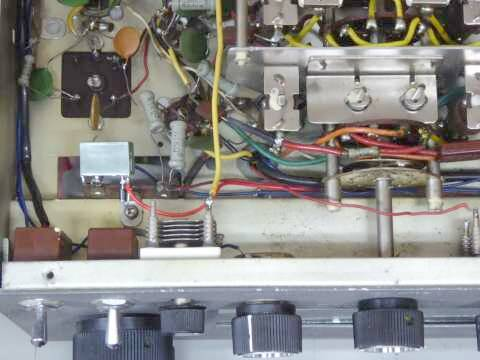 |
左上、ＩＦＴのすぐ下に見えるのが今回追加したリレーです
Ｑマルチに供給される＋Ｂ電圧から降圧してＤＣ２４Ｖリレーを動かしています |
|
こちらの点は、基本的な問題です（製品化の時に、気付かなかったのか不思議）
Ｑマルチ機能の搭載に際して、９Ｒ-５９においては常にＱマルチ回路が接続され、ＢＦＯとして働かせるときに切り離すようになっています
通常、常に回路が接続されているため、１ｓｔＩＦＴの調整さえまともに出来ません
もちろん、その分感度も低下します
１００μＶ入力でＳ９などは、夢物語となります
この解決には、Ｑマルチを使用しないときには、切り離しを考えないといけません
今回は、Ｑマルチを働かせるときのＢ電圧から降圧してリレーを駆動して、この役割を持たすことにしました(ノーマル・オープン） |
| ふと、あとから発売になった上位機種であるＪＲ-６０の回路を見て気付きましたが、こちらではちゃんと、通常Ｑマルチを切り離すようになっていました |
ＲＦ系のトラッキング調整はコツがあります（慣れというか・・・）
５００ＫＨｚから３０ＭＨｚまで連続受信という設計のせいでしょう、アマチュアバンド専用の受信機、例えばＳＸ－１４０に比べると、電気的な性能は見劣りします
が、Qマルチ回路の切り離しを行ったことで、かなりの改善が見られました
７ＭＨｚ帶
ＣＷ／ＳＳＢ受信も、ちゃんと出来ますが、周波数安定度については、ちょっと気になる・・・・ＳＭ－５（プリコン）が３．５ＭＨｚを出力（第一ＩＦ）にしていたこともうなずけます
|
カタログ表記は、１０μＶ入力でＳ／Ｎ２０ｄｂ以上（ＡＭ／１０ＭＨｚ） Ｓ９＝１００μＶ
ＡＭは、Ｑマルチ ＯＦＦ（リレーで、接続ＯＦＦ）
ＣＷ／ＳＳＢは、ＭＶＣ（ＡＧＣは、ＯＦＦ）
| ＢＡＮＤ（ＭＨｚ） |
ＡＭ
３０％ １ＫＨｚ 変調ＯＮ／ＯＦＦで
S/N１０ｄｂが得られる信号強度 |
ビート受信（ＣＷ／ＳＳＢ）
ＲＦ信号のＯＮ／ＯＦＦで
S/N１０ｄｂが得られる信号強度 |
| １．６ |
２．０μV |
１．０μV |
| ３．５ |
１．７μV |
０．５μV |
| ７ |
１．５μV |
０．７μV |
| １０ |
１．５μV |
１．0μＶ |
| １４ |
２．５μV |
１．.0μＶ |
| ２１ |
２．５μV |
０．８μＶ |
| ２８ |
５．５μV |
２．５μＶ |
１６００ＫＨｚ 受信／ＤＥＬＩＣＡプラグイン・コンバータ親機に
|
|
|
ＤＥＬＩＣＡコンバータが色々手に入ったもので、親機が欲しい・・・と言うところからつい手にした９Ｒ-５９です
ここからが、もうひとつの本題、です（前置きが、ずいぶんと長い！！） |
|
| ＤＥＬＩＣＡプラグイン式コンバータ |
三田無線研究所 往年の憧れ先というか、国内無線黎明期の中でも先駆者ともいえるところであったと思います
１９２４年（大正１３年）の創業です（２００９年に製造業を廃業）
元々は音響メーカー／ラジオや電蓄を作っていたところと聞いています
１９５３年頃からアマチュア無線分野の製品・・・同じラジオでも通信型受信機あるいは関連製品を発売されたものと思われます
その社の製品・・・ＤＥＬＩＣＡブランドで販売されましたが、基本に忠実で、シンプルな構成で高性能、一言で表せばこんな製品群だったと思います
手作りの良さみたいなところもあって、信頼性の高い製品をだしていました（ダイヤル刻印は手書きとか）
少なくとも１９６０年には、９Ｒ-５９などと一緒に雑誌ＣＱ誌に広告がありました
ＣＳ-６（通信型６球受信機）については、９Ｒ-４より一足早く１９５３年には発売されたようです |
ＨＡＭバンド・プラグイン式コンバータです
電源を入れ、ダイヤル照明ランプが点灯した状態で撮しました
ビスは止めていません（まだ完成とまで言えないもので！） |
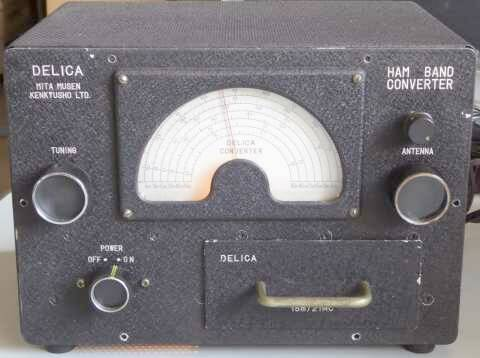
本来、ＣＳ-６という自社受信機を親機に、
高い周波数帯のより実用を目指したものでしょう |
ＢＣバンド５球スーパーを通信型受信機に大変身・・・みたいなことを可能にする装置です
選択度はどうしようもありませんが、３．５～５０ＭＨｚの６バンドを、１５００ＫＨｚに変換するものです
すなわち、ＢＣラジオを、ダブルスーパーと同等の感度と安定度が得られるよう変身？させようとする装置です
アンテナ・トリマの上に追加されたツマミは、ＲＦゲイン調整ボリュームです
９Ｒ-５９のＩＦゲイン調整では、強いＳＳＢ信号の音が歪むので、ここに感度調整ボリュームを追加しました |
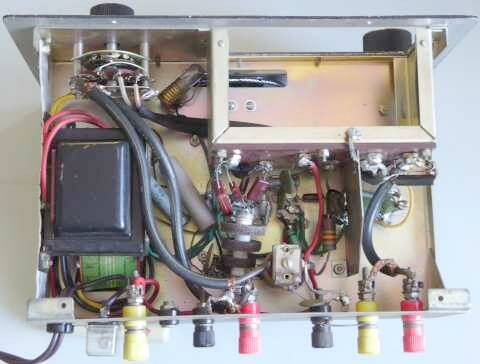 |
こちらは、回路図どおり＋Ｂ電源にチョークトランスが入っています
取付フレームがいかにも後付けで怪しい？ですが！
またダイヤル照明用パイロットランプが装備されています
上写真は、このものです |
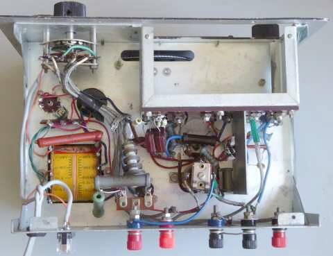 |
こちらは、＋Ｂ電圧回路にチョークトランスが入っていません
電源トランスは、ＳＥＬ製
多分オリジナルは、ＴＯＰブランドだと思われます
酸化皮膜抵抗は、チョークトランスの代わりの抵抗が劣化していたため、私が取り付けたものです
ヒューズホルダも壊れていたので新調しました
ちょうど真ん中あたたりに写っている青い線が、Ｌ型抵抗器の中に差し込まれているのですが、これで局発信号を容量結合させています |
２台入手しましたが、ご覧のように時期によって少し内容が違います(キットで組み立てた方のセンスの違いがあるのかも）
手作りっぽくて良いです
バンド切替ＳＷを使用せず、プラグイン構造がとってあります
無駄な配線長の発生や、互いの干渉など起きない、ある意味理想的なＲＦ空間が得られることになります
オシレータのミキサーへの結合も、リード線をＬ型抵抗器の中に差し込んで小容量結合させるなどアマチュアライクとも思われる方法が採用されています |
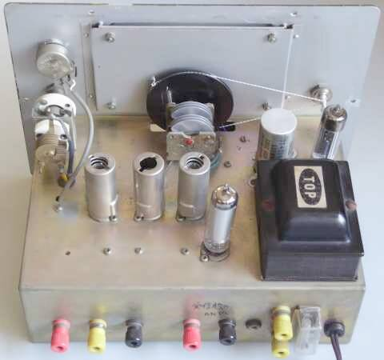 |
ダイヤル糸とドライブ・シャフトは、こちらで交換したものです
シャフト径は、オリジナルより一回り細く、結果的に減速比が大きくなっています
アンテナ・トリマの上には、オリジナルには無いＲＦゲインＶＲを取り付けています
単純に、ＲＦアンプ／６ＢＡ６のカソードに入れただけのものです |
手元の資料（時期不明）では、
球無し完成品が￥１２，８００ 球無しキットが￥１０，５００ 真空管一式が￥３，０００
プラグインユニットが、１バンド当たり￥２，０００ で販売されていました
真空管：６ＢＡ６（ＲＦ） ６ＡＫ５（ＭＩＸ） ６Ｃ４（ＯＳＣ） ６Ｘ４（ＲＥＣＴ） ＯＡ２（ＲＥＧ）の、５本構成] |
|
ここにご紹介の親機に、このプラグ・イン・コンバータを接続して、感度を測ってみました
使用したのは、チョーク・トランスが使われているモデルです
ＡＭ １ＫＨｚ３０変調 ＯＮ／ＯＦＦで、S/N１０ｄｂ得られる信号強度
ＳＳＢ／ＣＷ 信号 ＯＮ／ＯＦＦで、S/N１０ｄｂ得られる信号強度
| ９Ｒ-５９ ７．１ＭＨｚ |
ＡＭ |
ＳＳＢ／ＣＷ |
| オリジナル（スルー） |
１．５μＶ |
０．７μＶ |
| ＋プラグ・イン・コンバータ |
１．３μＶ |
０．４μＶ |
|
|
|
| ９Ｒ-５９ ２１．２ＭＨｚ |
|
|
| オリジナル（スルー） |
２．５μＶ |
０．８μＶ |
| ＋プラグ・イン・コンバータ |
１．５μＶ |
０．５μＶ |
アンテナトリマ・ＩＦゲイン・プラグインコンバータＲＦゲインなど、細心の注意を払って調整した結果です
２１ＭＨｚ帯にあっては、格段の違い 感度以上に周波数ドリフトの様子が全く異なります
オリジナルでは、ＳＳＧ信号受信にダイヤルから手が離せません
７ＭＨｚ帯では、フル・ゲインでは、オーバー・ゲインで、ＳＳＢ／ＣＷにビートがかかりません
コンバータにＲＦ感度調整を付ける気持ちがよくわかります
ＡＭ受信だけであるなら、S/Nがあまり良くないで済まされるでしょうが、少し強力なＳＳＢ／ＣＷの受信には、このＲＦゲイン調整だけでは追い付かず、アンテナトリマなどでわざと離調して入力信号を低減させる必要があります
結論としては
ロー・バンドに関して、９Ｒ-５９クラスの受信機であるなら、７ＭＨｚ帯まではオリジナルの状態で十分使用に耐える
５球スーパーとか、少し通信機として性能の低い受信機に後付けして使うのによりメリットがある
ハイ・バンドに関しては、９Ｒ-５９クラスの受信機に後付けしても、十分メリットがある
シングル・スーパーでは対応が追い付かないところをダブル・スーパー化して、感度の向上や周波数安定度の向上という大きなメリットが得られる
・・・・のように思われます |
| ＤＥＬＩＣＡ ＶＨＦ用 ５０／１４４ＭＨｚコンバータ |
セルフコンバータで、各ＶＨＦ帯を７ＭＨｚに変換します
入手できたものは、ＶＲ１５０が組み込まれていました |
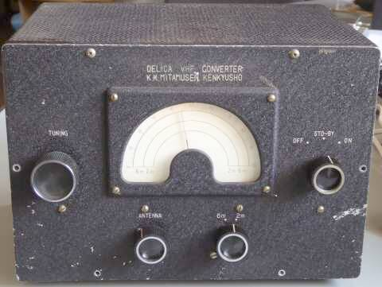 |
通電した状態で撮しています
ダイヤル上の方が、ほんのりと昼光色・・・
ビスは上の２本だけ止めています
こちらのダイヤルスケールには、具体的な周波数は書かれていません
きっと、ユーザーが手書きするのだと思います
ノブは、
チューニング
アンテナ・トリマ
バンド切替（６／２ｍ）
モード切替（電源、スタンバイ、受信）
の４つ |
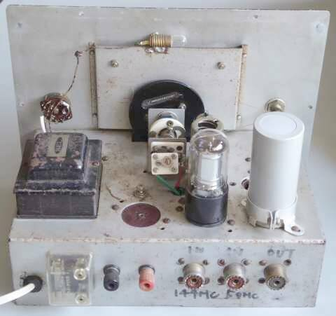
一見、真空管が２本しか見えませんが、シールドを被った
１２ＡＴ７の向こうに、６ＢＱ７Ａの頭が少し見えています |
ダイヤル照明ランプが付いています
メインＶＣの後ろにくっついているエアトリマは、私が取り付けたものです(補正用）
本機ですが、整流管はダイオードに交換されており、定電圧放電管が追加されています
電解コンデンサ(ブロックコンデンサ）は、手持ちのものに交換・・・なにせ元付いていたものは完全に容量抜けで、＋Ｂ電圧は規定電圧の半分にもなっていませんでした
こちらはプラグインコンバータより減速比が大きくなるように、細いダイヤルシャフトが採用されています |
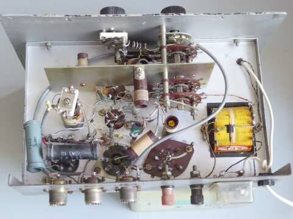 |
こちらもオシレータとミキサーの結合は、双三極管を活かして内部結合と、極めて合理的です
１４４ＭＨｚ帯に於いては１４０ＭＨｚに近い周波数を自励発振させて使うわけで、そのコイルたるや、リード線に毛が生えたようなもの・・・・それでもダイヤルスケールのＶＣ容量の大きな半分は使用できません（目的より低い周波数でしか発振できない・・・私のやり方に起因することかも！？））
中央付近にその１４４ＭＨｚ帯受信用の局発コイルが写っています（５０ＭＨｚ帯局発コイルのすぐ左側）
トランスに重なって写って見えるのが整流用ダイオードです |
|
コンデンサがアウトだったり、大型抵抗器の足の半田がポロッと取れたり、さすがに経年を感じます
が、直せばそれなりに動作・・・シンプルなものだからこそ、と言う気がします
１４４ＭＨｚ帯受信用の局発コイルには少々手を焼きました(何が正しいか不明なため）
ワンターンあるかどうかのリード線にしか見えません！？ |
手元の資料（時期不明）では、
球無し完成品が￥２１，０００ 球無しキットが￥１７，５００ 真空管一式が￥２，７００
真空管：６ＢＱ７Ａ（ＲＦ） １２ＡＴ７（ＯＳＣ／ＭＩＸ） ６Ｘ４（ＲＥＣＴ）の、３本構成
オプションでＶＲ１５０（定電圧放電管／ＧＴベース）が設定されていたようです（標準回路には記載がありません） |
|
この手にしたものが正常に組み立てられている（動作している）を前提にですが、バンドSWの接点クリーニングや、気になる配線（同軸ケーブルの網線が配線されていないなど）を修正したのち、感度を測ってみました
計測中、なんとなく同調ハム（Hum）を感じたので、B電源に平滑コンデンサを追加しました
５１MHｚ １ＫＨｚ３０％変調 ＯＮ／ＯＦＦで、S/N１０ｄBが得られる信号強度は １０μＶ
１４５MＨｚ で、同じ条件で行うと １５μＶ でした
いずれのバンドも、たまに条件が揃うと？６μＶ位まで感度が上がりますが、安定しません
正直、１４４ＭＨｚ帯については安定度で実用になりませんが、５０ＭＨｚ帯は実用になりそうです（ただしＡＭ）
回路図もなく、また真空管の劣化具合も不明な現状で、得られた性能（結果）ですので参考程度に |
| 2025.10 追記 |
|
| ９R-５９と、ほぼ同時に発売されたオプションの一つ、プリ・セレ ＳＭ-１ 情報追加（2025.10） |